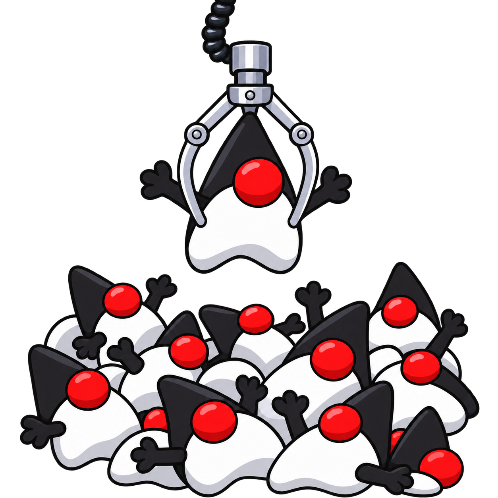

See what’s available
Browse compatible JDKs for your machine.
jvm available
A little tool for your JDKs
Download and select Java Development Kits with a small command line tool that stays out of your way.
Explore the documentationOpen source MIT licensed Unix & Windows
curl -fsSL https://getjvm.dev/install.sh | bashiex (irm 'https://getjvm.dev/install.ps1')Pick a version. Get back to building.
Browse compatible JDKs for your machine.
jvm availableAsk for a version and distribution by name.
jvm install temurin-21Use Java 21 for an individual command.
jvm exec 21 java -version